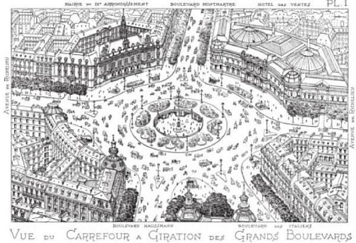
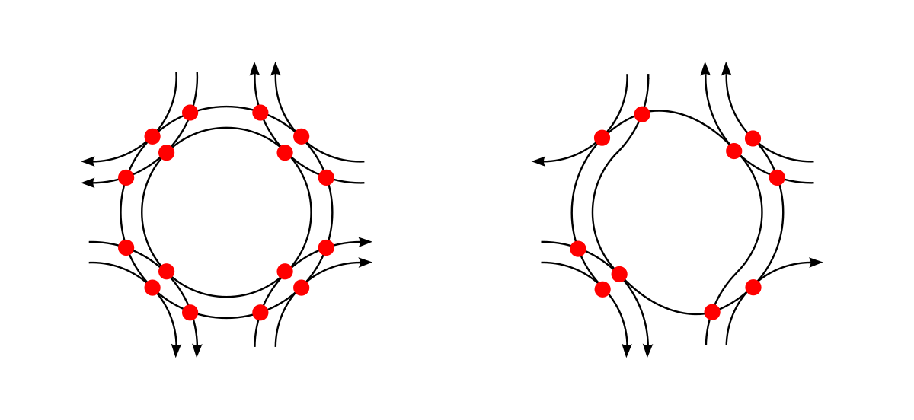

Part III · Traffic engineering · Module 9
Junctions: signals, roundabouts and priority
Where two streets cross, someone has to wait. In cities, junctions cause most of the delay on the network and a large share of its serious crashes. They also decide how long a child waits to cross the road. Countries have answered the same problem in strikingly different ways. Germany and the US time their junctions with signals. France, Spain and Italy have built tens of thousands of roundabouts. The Netherlands invented the turbo-roundabout and the protected cycle crossing. This module treats each answer as a choice between objectives: delay, safety, space, pedestrians and cost.
- The question
- Should this junction be a give-way junction, a set of signals or a roundabout, and how big should it be? Each answer favors different people and different hours of the day.
- What matters
- Delay in the peak and in the other twenty hours of the day; severe crashes, which depend mostly on speed and the angle of impact; land; the waiting time of pedestrians, cyclists and bus passengers; and the cost of building, powering and maintaining the junction for decades.
- Numbers to question
- The design-hour traffic flow; the capacity formula (national methods differ by more than 50% for the same entry); the walking speed and the waiting time assumed for pedestrians; the crash reductions claimed; the "reserve capacity" a design is required to keep.
- Levers
- The junction type. Its size: French guidance tells designers to shrink oversized roundabouts. The signal cycle length and the pedestrian phases. Bus priority. And the objective written into an adaptive signal controller.
- Ask your analysts
- Which hours and which road users did the comparison count? Was the capacity method checked against local observations? What does the signal controller minimize? Could the junction be smaller and still work?
- Compare priority junctions, signals and roundabouts on delay, safety, land, pedestrians and cost, and say which terms of \(W\) each choice protects.
- Explain in words why the capacity of a give-way entry falls as the main-road flow rises, and why British practice prefers measured capacities to behavioral theory.
- Explain the trade-off behind a signal's cycle length, and apply Webster's rule (method layer: compute the timing and the delay).
- Tell the history of signal optimization from TRANSYT to SCOOT and SCATS, and name the objective these systems minimize.
- Tell the history of the modern roundabout from Paris to Britain and back to France, and explain GIRABASE's advice against oversizing.
- Describe the Dutch turbo-roundabout and protected intersection, and the evidence on roundabout safety, including for cyclists and blind pedestrians.
1. One junction, three answers
Picture a junction on the edge of a mid-sized town. A main road carries 800 cars an hour in the evening peak. A side road brings 300. A bus line turns here, and children from a nearby school cross on foot. The town council has to choose how this junction will work for the next forty years.
A junction is dangerous because paths cross. Engineers call each place where two vehicle paths meet a conflict point. A crossroads of two two-way streets has 32 of them: 16 where paths cross, 8 where they merge and 8 where they split. Crossing conflicts are the dangerous ones. They produce side impacts and turning crashes, the most severe kind at town speeds.
There are three basic ways to manage these conflicts:
| Control | How it works | What it is good at | What it costs |
|---|---|---|---|
| Priority (give way or stop) | The side road waits for gaps in the main road's traffic. | Cheap, compact, no waiting for the main road. | Side-road delay grows fast as main-road traffic rises. Crossing conflicts remain. |
| Signals | Conflicting streams take turns, separated in time. | High capacity in the peak. Protected crossing phases. Can favor buses and coordinate a corridor. | Everyone waits at red, also at night. Needs power, detectors, maintenance and retiming. Red-light running causes severe crashes. |
| Roundabout | Everyone turns the same way around an island. Entering traffic gives way to traffic already on the ring. | No crossing conflicts between vehicles. Low speeds enforced by the geometry. Little waiting at low and medium traffic. | Needs a circle of land. Hard to give priority to buses. Hard for blind pedestrians and, at large designs, for cyclists. |
A single-lane roundabout has 8 conflict points: 4 merges and 4 splits, and no crossings. Building the roads on two levels removes crossing conflicts altogether, at a much higher cost in land and money.
None of the three is best everywhere. Each serves some objectives better than others. The rest of this module asks, for each type: where did it come from, what does it assume, which objective does it serve, where does it fail, and what do other countries do instead?
2. Priority junctions: waiting for a gap
A driver waiting on the side road watches the main road. They pull out only when the gap to the next car is long enough. The shortest gap a driver will accept is called the critical gap. At a single-lane roundabout entry it is about 4 to 4.5 seconds. For a left turn from a minor road across two-way traffic in the US, it is about 7 seconds. When several cars are queued, they follow each other into a long gap at intervals of about 2.5 to 3 seconds. This interval is called the follow-up time.
If main-road cars arrive at random, long gaps become rare as main-road traffic grows. So the side road's capacity falls steeply. With 800 cars an hour on the main road and typical roundabout values, the side road can feed about 690 cars an hour into the stream. With 1,200 cars an hour, the figure falls to about 510. German engineers derived such formulas from probability theory in the late 1960s and early 1970s. They are the basis of the German capacity manual, the HBS (Module 8).
Under the hoodGap-acceptance capacity formulas and a worked example
Write \(t_c\) for the critical gap and \(t_f\) for the follow-up time, both in seconds. Write \(q_p\) for the flow on the main road (the "priority" stream), in vehicles per second. If the main-road headways are exponentially distributed (random arrivals), two classical results give the capacity of the minor stream:
$$C_{\text{Harders}} = \frac{q_p\, e^{-q_p t_c}}{1-e^{-q_p t_f}}, \qquad C_{\text{Siegloch}} = \frac{1}{t_f}\,\exp\!\Big[-q_p\Big(t_c - \tfrac{t_f}{2}\Big)\Big].$$Harders (1968) underlies the German HBS procedures for unsignalized junctions. Siegloch (1973) gives a nearly identical curve in a simpler form. Tanner's extension accounts for a minimum headway between main-road vehicles, and Brilon and Wu developed the version used for German roundabouts.
Example. With \(q_p=800\) veh/h (0.222 veh/s), \(t_c=4.1\) s and \(t_f=2.9\) s, Siegloch gives
$$C = \frac{3600}{2.9}\times e^{-0.222\times(4.1-1.45)} = 1241\times e^{-0.589}\approx 690\ \text{veh/h}.$$At \(q_p=1200\) veh/h (0.333 veh/s) the exponent becomes \(-0.883\), and \(C\approx 1241\times0.414\approx 510\) veh/h.
The British critique: measure, don't assume
In Britain, R. M. Kimber of the Transport and Road Research Laboratory (TRRL) tested gap-acceptance theory against reality. He measured how many cars actually entered at roundabouts where a queue was waiting all the time, at many public sites. The theory tended to predict too much capacity when the ring was quiet and too little when it was busy. Real drivers force their way into gaps, drivers on the ring let others in, and impatience grows with queue length. Kimber (1989) drew a methodological conclusion. A capacity formula should be judged by how well it predicts observed capacities, not by how elegant its story of driver behavior is. British practice therefore uses statistical fits of measured entry capacity to the geometry and the circulating flow (section 4). The lesson reaches beyond junctions. A traffic simulator with a textbook rule for gap acceptance can produce the wrong capacity, and the right test is against observed queues (Module 10).
3. Traffic signals: who waits, and for how long
The cycle-length trade-off
A signal gives each group of streams a turn, called a phase. One round of all phases is a cycle. Every change of phase wastes a few seconds: the last cars clear the junction, and the first cars of the next queue need time to react and accelerate. This waste is called lost time.
The choice of cycle length is a trade-off. A long cycle changes phase less often, so less time is lost and more cars get through per hour. But everyone waits longer at red, including pedestrians. A short cycle means short waits but more lost time, so the junction jams sooner when traffic is heavy.
During green, a queue drains at a roughly constant rate, about 1,800 to 2,000 cars per hour of green per lane in many countries. This rate is called the saturation flow. It is the most important number in signal design, and it is worth checking against local observation.
Webster's rule
In 1958 F. V. Webster of the UK Road Research Laboratory (RRL) published Traffic Signal Settings. He simulated cars arriving at signals and fitted simple formulas to the results. His rule gives the cycle length that roughly minimizes the average delay per vehicle. Green time is then shared between the phases in proportion to how loaded each one is. In words: the busier the junction is relative to its saturation flows, the longer the best cycle. As the junction approaches its capacity, the best cycle, and the delay, grow without limit.
A worked example in the box below takes a junction with 600 and 450 cars an hour on its two busiest approaches. Webster's cycle is about 41 seconds. Cars wait on average about 13 and 17 seconds. Both are good values by the standards of the US Highway Capacity Manual (Module 8).
Now add a pedestrian crossing. A 14 m crossing at a walking speed of 1.2 m/s needs about 12 seconds to clear, plus a few seconds of walk signal. That alone is longer than the 14 seconds of green Webster gives one of the two phases. So the cycle must get longer, and vehicle delay rises. Webster minimizes vehicle delay. Pedestrians do not appear in his objective. Neither does the number of people on a bus. A welfare objective would count people, not vehicles, and would weigh time spent waiting on a curb more heavily than time sitting in a car, because travelers dislike waiting more (Module 2). Short cycles favor pedestrians; long cycles favor vehicle capacity.
Under the hoodWebster's formulas and the worked example step by step
For phase \(i\), let \(q_i\) be the flow on its most heavily loaded approach and \(s_i\) the saturation flow. The flow ratio is \(y_i=q_i/s_i\), and the junction total is \(Y=\sum_i y_i\). Let \(L\) be the total lost time per cycle, in seconds. The junction can work only if \(Y<1-L/c\) for cycle length \(c\).
Webster's approximately delay-minimizing cycle length is
$$c_0 = \frac{1.5\,L + 5}{1-Y}\ \text{(seconds)},$$with effective green split in proportion to the flow ratios, \(g_i = (c_0 - L)\,y_i/Y\). The average delay per vehicle on an approach is
$$d = \frac{c(1-\lambda)^2}{2(1-\lambda x)} + \frac{x^2}{2q(1-x)} - 0.65\Big(\frac{c}{q^2}\Big)^{1/3} x^{(2+5\lambda)},$$where \(\lambda=g/c\) is the green share and \(x=qc/(sg)\) the degree of saturation. The first term is the delay of cars arriving at a steady rate. The second is the extra delay from random arrivals, which explodes as \(x\to1\). The third is an empirical correction.
Worked example. Two phases. North–south critical flow 600 veh/h, east–west 450 veh/h, saturation flow 1,800 veh/h for both, 4 s lost per phase (\(L=8\) s).
- \(y_1=600/1800=0.333\), \(y_2=450/1800=0.250\), \(Y=0.583\).
- \(c_0=(1.5\times8+5)/(1-0.583)=17/0.417\approx41\) s.
- Effective green available \(=41-8=33\) s: \(g_1=33\times0.333/0.583\approx18.9\) s, \(g_2\approx14.1\) s.
- Degree of saturation is about 0.72 on both phases (equal by construction).
- Delay on the north–south approach: \(\lambda=0.46\); uniform term 9.0 s, random term 5.7 s, correction −1.9 s, so \(d\approx12.8\) s/veh. East–west: \(d\approx16.7\) s/veh. Both are HCM level of service B.
Germany: the RiLSA and intergreen times
The German Richtlinien für Lichtsignalanlagen (RiLSA, published by the road research association FGSV) govern signal design. They are notable for detailed rules on intergreen times (Zwischenzeiten): the time between the end of green for one stream and the start of green for a conflicting stream. It is computed from the clearing distance, the clearing speed and the entering stream's approach distance, separately for vehicles, cyclists and pedestrians. Capacity and quality of signalized junctions are then assessed with the HBS. German practice combines this rigor with a dense use of signals in cities, including separate signals for cyclists. The RiLSA and HBS are paid FGSV publications.
Actuated control
Actuated (vehicle-responsive) control extends a green while detectors in the road register arriving vehicles, up to a maximum. It is standard in Germany and the US for isolated junctions. Pedestrian push buttons are the pedestrian side of the same idea. Where they only request a phase that would come anyway, or add a long wait, they mainly serve vehicle capacity.
From hand calculation to computers: TRANSYT, SCOOT and SCATS
Webster timed one junction at a time. Along a city street, though, the signals interact: a platoon released by one signal should arrive at the next one on green. In 1967 Dennis Robertson's program TRANSYT, at the same British laboratory, searched for the timings of a whole network at once. Module 1 tells that story. TRANSYT optimized a "performance index", a weighted sum of vehicle delay and stops. That index is an objective function, and it counts vehicles.
TRANSYT's plans were fixed. They were computed from traffic counts and then left alone, often for years, while traffic changed. In 1973 the Transport and Road Research Laboratory began work on a system that would retime signals continuously from live data. It worked with three British signal companies, Ferranti, GEC and Plessey. The result was SCOOT (Split, Cycle and Offset Optimisation Technique). Detectors placed upstream of each junction measure the traffic heading toward it. Every few seconds a computer predicts the queues and makes small adjustments to the green times, the cycle length and the coordination between neighboring signals. Trials in Glasgow in 1979 and Coventry in 1980 covered 62 signals. The 1981 report concluded that SCOOT cut vehicle delay by about 12% compared with up-to-date fixed plans, and by more where the fixed plans were old.
The report also shows how such a system "sees" pedestrians. SCOOT's performance index is the sum of the predicted vehicle queues, optionally plus weighted stops. At one Coventry junction, a pedestrian phase called on demand stopped an important through movement. Under SCOOT the junction lost 11% in evening-peak journey time compared with the old fixed plan. The engineers' fix was to run that junction on a cycle half as long as its neighbors' ("double cycling"), so each pedestrian call stopped traffic only briefly. It turned the loss into a 3% gain. To the optimizer, the people crossing were a capacity problem. A shorter cycle happened to serve them too.
At about the same time, the Department of Main Roads of New South Wales developed SCATS (Sydney Coordinated Adaptive Traffic System) in Sydney. SCATS measures, at the stop line, how fully each green is used, and adjusts cycle lengths and splits from plans prepared in advance. Today TRL Software reports SCOOT in over 350 towns and cities, and Transport for NSW reports SCATS at more than 60,000 intersections in over 30 countries.
Adaptive systems usually reduce vehicle delay compared with outdated fixed plans. But their default objective is vehicle delay and stops. Configured naively, they can lengthen cycles, and with them pedestrians' waits. Bus priority and short pedestrian waits must be written into the objective, or the controller will minimize vehicle delay, \(\sum q\,t\), in real time. Who sets these weights is a policy decision, not a technical detail.
Sources: P. B. Hunt, D. I. Robertson, R. D. Bretherton and R. I. Winton, SCOOT: a traffic responsive method of coordinating signals, TRRL Laboratory Report 1014 (1981); Transport for NSW, SCATS; TRL Software, SCOOT.
4. Roundabouts: from Paris to Britain and back


The circular junction is a French idea. Around 1906 the Paris architect Eugène Hénard proposed the carrefour à giration: all traffic would turn the same way around a central island, so that no two carriages ever crossed head-on. In New York, William Phelps Eno promoted the same one-way rotary movement at existing circles. Paris applied it at the Place de l'Étoile.
These early circles had a flaw. Entering traffic had priority, following the general rule of giving way to the right. Once the ring filled with cars, nobody could leave and the circle locked solid. Circles fell out of favor in France and the US.
Britain fixed the flaw. After local trials, it made the opposite rule general in 1966: traffic entering a roundabout gives way to traffic already on the ring. A full ring can then always empty, so it cannot lock. With this rule, roundabouts could be smaller and still keep traffic moving.
France adopted the British rule in 1984. A Swiss review counts some 500 French circles before the change, and about 30,000 roundabouts by 2010. An American historian of the subject, writing in 1988, described the shift: following the British example, French engineers had turned to smaller circles in which entering traffic gives way.
Sources: K. Todd, "A history of roundabouts in the United States and France", Transportation Quarterly 42(4), 1988; Citec, "Les giratoires, un outil toujours aussi en vogue", Route et trafic 5/2010 (French).
The British example spread from the 1980s to Spain, Italy, the Netherlands, Germany and many other countries. Counts based on OpenStreetMap suggest that France has the most roundabouts in Europe, followed by the UK, Italy and Spain. Such counts depend heavily on mapping rules and are only indicative.
France: GIRABASE, and the advice to build smaller
France's national capacity tool is GIRABASE. Bernard Guichet developed it at the regional public engineering center in Nantes (CETE de l'Ouest), from capacity and safety studies begun in the early 1980s. It received national status in 1997 after validation by the national technical agencies CERTU and SETRA. Today it is distributed by their successor, CEREMA.
GIRABASE treats a roundabout as a series of T-junctions. At each entry, capacity falls as the "disturbing traffic" (trafic gênant) rises. That traffic is mainly the flow circulating past the entry. It also includes part of the flow leaving at that same arm, because a waiting driver cannot always tell whether an approaching car will exit or carry on. The shape of the curve is the same as in the gap-acceptance theory of section 2, but the parameters are fitted to French observations.
What distinguishes French guidance most is not the formula. It is the attitude to oversizing. The GIRABASE manual tells designers that a roundabout works well in the peak hour with 25–80% reserve capacity on all entries, and that a large reserve is a reason to shrink the design:
Si toutes les entrées ont une large réserve de capacité (plus de 50 %), le dimensionnement global du giratoire pourra être réduit : un rayon de 15 à 20 m peut suffire plutôt que 35 à 50 m pour des 3 ou 4 branches (ceci va aussi dans le sens de la sécurité en heure creuse).
"If all entries have a large capacity reserve (more than 50%), the overall size of the roundabout can be reduced: a radius of 15 to 20 m may be enough rather than 35 to 50 m for 3 or 4 arms (this also improves safety in off-peak hours)." Elsewhere the manual advises narrowing a two-lane (7 m) entry with more than 50% reserve to one lane (3.5–4 m), because one lane "leaves sufficient capacity and improves safety (pedestrian crossing, entry speed in off-peak hours…)". Source: CEREMA, GIRABASE 4 documentation, §1.3.1. Translated by the course authors (machine-assisted).
In the language of \(W\): French guidance accepts a little peak delay (Term A) to gain off-peak safety (Term C) and save land (Term D). The manual also notes that GIRABASE computes waiting times for a steady hour and "does not include a peak factor", the adjustment for the busiest quarter-hour that US practice applies (Module 8). Two national methods can thus disagree on a design even before their formulas differ.
Under the hoodThe SETRA 1987 linear formula, with the Italian source
A simpler linear method, published by SETRA in 1987 and used in Italian teaching as the basis of Italian pre-standards, computes entry capacity \(K\) in passenger-car equivalents per hour:
$$Q_u' = Q_u\,\frac{15-\text{SEP}}{15},\qquad Q_d = \big(Q_c + \tfrac23 Q_u'\big)\big[1-0.085(\text{ANN}-8)\big],$$ $$K = (1330 - 0.7\,Q_d)\,\big[1+0.1(\text{ENT}-3.5)\big],$$where \(Q_c\) is the circulating flow passing the entry, \(Q_u\) the exiting flow at the same arm, SEP the width of the splitter island (m; exits are ignored if SEP ≥ 15 m), ANN the ring width (m) and ENT the entry width (m). The short form \(C=(1330-0.7Q_g)(1+0.1(l_e-3.5))\) is the same formula with the conflicting-traffic adjustments folded into \(Q_g\). It is verified against the University of Cagliari course notes below, which cite SETRA (1987); the original SETRA document was not consulted. Treat it as a planning-level approximation for single-lane French-style roundabouts, not as a universal law.
Il calcolo della capacità delle rotatorie secondo la prenormativa italiana: metodo messo a punto in Francia nel 1987 dal SETRA… il parametro geometrico fondamentale per il calcolo della capacità è la larghezza ENT… ed in particolare lo scarto rispetto ad una larghezza standard di 3,5 m.
"Calculating roundabout capacity according to the Italian pre-standard: a method developed in France in 1987 by SETRA… the fundamental geometric parameter for the capacity calculation is the width ENT [measured behind the first car stopped at the give-way line]… and in particular its deviation from a standard width of 3.5 m." The notes then set out the method of the equations above, and contrast it with the Swiss formula \(C_e=1500-\tfrac89Q_g\), Kimber's British regression and US practice. Source: Università di Cagliari, course slides "Rotatorie: capacità". Translated by the course authors (machine-assisted).
United Kingdom: wide entries for capacity
Kimber's TRRL Laboratory Report LR942 (1980) is based on saturated entries at many public-road sites. It found entry capacity to fall in a straight line as circulating flow rises. The capacity at a given circulating flow depends mostly on the entry width and the length of the flare, where the approach widens just before the entry. Entry angle and radius matter less. These relationships are built into TRL's ARCADY software and the UK design manual. The British tradition thus favors wide, flared entries for capacity. Wide entries also raise entry speeds. French guidance resolves that trade-off the other way, toward narrow entries and safety.
Under the hoodKimber's regression
Kimber's model is \(Q_e = k(F - f_cQ_c)\), where \(Q_e\) is entry capacity and \(Q_c\) circulating flow. The intercept \(F\) and slope \(f_c\) are functions of entry width \(e\), approach half-width \(v\), effective flare length, entry radius, entry angle and inscribed circle diameter; \(k\) is a correction for entry angle and radius. The functional forms are given in LR942 and in the UK Design Manual for Roads and Bridges.
Germany: compact single-lane roundabouts
German roundabout capacity in the HBS follows the gap-acceptance approach of section 2, developed by Werner Brilon and colleagues at the Ruhr University Bochum, with parameters estimated for German single-lane and two-lane roundabouts. German practice has been cautious with multi-lane rings because of their crash record. It makes heavy use of compact single-lane roundabouts on rural and suburban roads.
Netherlands: the turbo-roundabout
Sometimes one lane is not enough. A conventional two-lane roundabout lets drivers change lanes on the ring. That creates new conflicts, where cars cut across each other. In 1996 the Dutch engineer Lambertus (Bertus) Fortuijn of Delft University of Technology proposed a different layout, the turbo-roundabout. Raised dividers separate the lanes, and the markings form a spiral. Drivers choose their lane before they enter, according to their exit, and cannot change it on the ring. The name refers to the spiral shape, not to speed.


Fortuijn (2009) reports fewer conflict points and safety close to that of single-lane roundabouts, at substantially higher capacity. The Dutch road safety institute SWOV, as summarized by the US Federal Highway Administration, found that after adjusting for traffic volumes, turbo-roundabouts are about as safe as single-lane ones. The US opened its first turbo-roundabout in Jacksonville, Florida, after more than a decade of promotion.
Dutch design guidance (CROW) also treats cyclists explicitly. On urban roundabouts, cyclists normally ride on a separate path around the ring and usually have priority over entering and exiting motor traffic. On rural roundabouts they usually do not. This is a qualitative summary; check current CROW guidance for details.
At signalized junctions, the Dutch protected intersection keeps cyclists on a separate path, with corner islands that set the cycle crossing back by several meters. Turning drivers then meet cyclists at nearly a right angle, in full view, after slowing for the corner. The design trades some land (Term D) for safety (Term C) and comfort (the comfort attributes \(\mathbf{x}\) in Term A for cyclists).
Source on origin and safety: FHWA, Turbo Roundabouts: Support Safety, Efficiency, and Increased Capacity (fact sheet, PDF).
Under the hoodFour more national traditions: Spain, Italy, Australia, Japan
Spain: lane choice before entry
Spanish practice emphasizes that capacity and safety on multi-lane roundabouts (glorietas) depend on how drivers spread across the entry lanes according to their exits. The Dirección General de Tráfico (DGT) recommends lane-allocation signs and markings on approaches. The national Nota de Servicio 5/2014 prescribes analysis methods for roundabouts (HCM 2010 methods, deterministic models or simulation, depending on complexity) and evaluates level of service by lane, approach and junction.
Resulta fundamental conocer el tráfico de la glorieta con detalle de giros y matriz origen-destino a fin de establecer cuál es la oferta de carriles más adecuada… Es importante utilizar el número mínimo requerido de carriles sujeto a consideraciones de capacidad para evitar puntos de conflicto adicionales.
"It is essential to know the roundabout's traffic in detail, with turning movements and the origin–destination matrix, in order to determine the most suitable lane provision… It is important to use the minimum number of lanes required for capacity, to avoid additional conflict points." The section explains that signs and markings on the approaches should tell drivers which lane to take for their exit, so that decisions are made before entering rather than by lane changes on the ring. Source: Dirección General de Tráfico, Recomendaciones para la mejora de la seguridad vial en entornos interurbanos. Translated by the course authors (machine-assisted).
For simulation, the Spanish lesson is that a badly reproduced roundabout may not be a car-following problem at all. It may be a failure of destination-aware lane choice upstream.
Italy: geometry by decree
Italy's Ministerial Decree of 19 April 2006, Norme funzionali e geometriche per la costruzione delle intersezioni stradali, classifies roundabouts by outer diameter: conventional (40–50 m), compact (25–40 m) and mini (14–25 m, with a partly or fully traversable central island below 25 m and 18 m respectively). Its main geometric criterion is speed control through deflection.
Il criterio principale per definire la geometria delle rotatorie riguarda il controllo della deviazione delle traiettorie in attraversamento del nodo… Per ciascun braccio di immissione si raccomanda un valore dell'angolo di deviazione β di almeno 45°.
"The main criterion for defining the geometry of roundabouts concerns the control of the deflection of paths crossing the junction… For each entry arm, a deflection angle β of at least 45° is recommended." The decree explains that vehicles must be deflected by the central island to prevent them crossing the junction at an inappropriate speed. Source: Ministero delle Infrastrutture e dei Trasporti, DM 19/04/2006, Gazzetta Ufficiale n. 170, 24 July 2006. Translated by the course authors (machine-assisted).
The decree also requires that roundabouts be dimensioned for capacity and level of service in the design peak period (§5). Practice is heterogeneous across regions, and Italian traffic includes many powered two-wheelers, which gap-acceptance models built for cars represent poorly.
Australia: lane by lane, with platoons
Australian practice, set out in the Austroads Guide to Traffic Management and implemented in the SIDRA INTERSECTION software developed by Rahmi Akçelik, analyzes each entry lane separately, with lane-specific critical gaps and follow-up times. It models circulating traffic with a headway distribution that separates bunched (platooned) vehicles from free ones. Two circulating streams with the same flow can thus offer different numbers of usable gaps. SIDRA is widely used outside Australia, including in the US. The Western Australian road agency's operational modeling guidelines show how SIDRA is used alongside microsimulation.
Japan: a late adopter
Japan legally defined roundabouts (環状交差点) in an amendment to the Road Traffic Act that took effect in 2014, and their number remains small compared with Europe. Japanese urban junctions are overwhelmingly signalized, with pedestrian scramble phases at busy station areas.
Same entry, five answers
How much do the national methods differ? Take a single-lane entry with 800 passenger cars an hour circulating past it, standard widths and no exiting traffic in the way:
| Method | Entry capacity (pcu/h) | Note |
|---|---|---|
| France, SETRA 1987 linear (entry width 3.5 m) | ≈ 770 | \(1330-0.7\times800\) |
| Switzerland (Bovy), \(1500-\tfrac89 Q_g\) | ≈ 790 | as given in the Cagliari notes |
| Gap acceptance (Siegloch), \(t_c=4.1\), \(t_f=2.9\) s | ≈ 690 | parameters illustrative |
| US, HCM 2010 single-lane, \(1130\,e^{-0.001 Q_c}\) | ≈ 510 | US drivers in 2000s data; HCM 6 raised the intercept to about 1,380 (≈ 610) |
The spread, more than 50% between the lowest and highest, is the main lesson. An international review by Yap, Gibson and Waterson (University of Southampton, 2013) concluded that none of the approaches, whether empirical, gap-acceptance or simulation, works without local calibration, and that parameters do not transfer reliably between countries. Drivers behave differently in different places. So does what each country counts as capacity. For a decision maker this has a practical meaning. Whether a roundabout "works" at a given site can depend on which country's manual the consultant used.
5. Safety: roundabouts versus signals
The safety advantage of roundabouts comes from two physical facts. First, conflicts are fewer and less severe: merges at small angles replace right-angle crossings. Second, the geometry forces low speeds, typically 25–35 km/h through a well-designed single-lane roundabout. The energy of a crash, and with it the severity of injuries, rises with the square of the impact speed (Module 11).
- A US before–after study of 23 junctions converted to roundabouts (Persaud, Retting, Gårder and Lord, 2001) estimated reductions of about 39% in all crashes, 76% in injury crashes and about 90% in fatal and incapacitating-injury crashes. It used the "empirical Bayes" method, which corrects for the fact that junctions are often rebuilt right after an unusually bad run of crashes.
- Elvik's (2003) meta-analysis of studies outside the US also found substantial reductions in injury crashes, with larger reductions for fatal crashes, and smaller effects when the junction converted had already been signalized.
- The benefits are smaller, and can reverse, for cyclists, especially at multi-lane roundabouts and where cycle lanes run on the ring itself. Separated cycle paths with clear priority rules perform best. Multi-lane conventional roundabouts also show more property-damage crashes than single-lane ones, which motivated the turbo design.
A society can treat road deaths as a price or as a limit (Module 1). Under a safety limit, written \(F(\theta)\le\bar F\) for deaths \(F\) under plan \(\theta\), a junction type that removes high-energy crossing conflicts relaxes the limit for the whole network at once. Under pricing alone, the crash savings enter Term C. Either way, the roundabout's off-peak benefit counts in every hour of the day. Its capacity disadvantage, compared with a well-timed signal, counts only in the few hours near capacity. This is the same asymmetry as the design-hour argument of Module 8.
Roundabouts give pedestrians short, two-stage crossings with low-speed traffic, but no protected phase. Blind and partially sighted pedestrians find gaps hard to judge at multi-lane entries and exits. US guidance has therefore considered signalized or beacon-controlled crossings at multi-lane roundabouts. A design that is good for drivers' safety is not automatically good for everyone's.
6. Choosing: passive versus active control, read through \(W\)
A roundabout is a passive instrument: the geometry does the work, without power or software. A signal is an active one: it needs equipment, data and someone to keep it tuned (Module 1). The table compares a signalized junction with a compact roundabout, term by term.
| Term | Signals (active) | Compact roundabout (passive) |
|---|---|---|
| A peak delay | Lower delay near capacity if well timed; corridor coordination possible; bus priority possible | Lower delay at low and medium flows, no waiting at red off-peak; no corridor coordination |
| A pedestrians, cyclists | Protected phases, but long waits with long cycles | Short crossings, no protection; poor at multi-lane designs |
| C crashes, noise | Right-angle and red-light-running crashes at speed; stop–start noise | Fewer severe crashes; smoother, slower flow |
| D land | Compact footprint, but turn lanes add width | Needs a circle; compact designs 26–40 m in diameter |
| E public cost | Equipment, power, maintenance and retiming over decades | Higher construction cost when rebuilding an existing junction, very low operating cost |
| Robustness | Fails in power cuts; depends on detectors and maintenance | Works without power; hard to change once built |
Count land once: the value of the land a design takes belongs in Term D, so the construction cost in Term E should exclude land purchase (Module 1).
The choice is not ideological. A busy urban junction with heavy pedestrian flows, trams and buildings close by may be best signalized. A suburban or rural junction with balanced flows is usually better as a compact roundabout. What matters is that the objective used to decide includes the off-peak hours, the people on foot, on bikes and on buses, and the safety limit, not only the peak-hour vehicle delay.
Junction models are also where many traffic simulations go wrong. A simulator's capacity at a junction comes from its rules for gaps and saturation flow. If those rules are not checked against the methods and observations of this module, the simulation's delays are not to be trusted. Module 10 shows how to check.
Use the Webster example in section 3 (method layer). A bus route with 20 buses per hour (average 40 passengers) runs north–south; cars carry 1.3 persons.
- Recompute cycle length and splits if a pedestrian phase must cross the 14 m north–south road at 1.2 m/s with a 6 s walk interval, running with the east–west vehicle phase.
- Compute average delay per person on each approach, and per pedestrian (assume random arrival: average wait ≈ red²/(2c)).
- Find the cycle length that minimizes total person-delay weighted by mode-specific values (pedestrian waiting time at 1.5× in-vehicle time). Compare it with Webster's \(c_0\).
A four-arm single-lane roundabout has entry flows (pcu/h) N 600, E 400, S 550, W 350, with turning proportions: 25% left, 50% ahead, 25% right on each arm. Entry width 4 m, ring width 8 m, splitter islands 5 m.
- Compute circulating and exiting flows at each entry.
- Compute entry capacity and reserve with the SETRA 1987 method, the Swiss formula and Siegloch (\(t_c=4.1\), \(t_f=2.9\) s). Which entry is critical in each?
- Following GIRABASE guidance, is the roundabout oversized? What would you change, and which terms of \(W\) would change?
- Build the roundabout on traffic-simulation.de or in SUMO and compare the simulated entry capacity curve with your three formulas. Which would you use to validate the simulator, and why?
A consultant recommends replacing a roundabout near a primary school with signals. The report shows that peak-hour vehicle delay falls from 28 to 19 seconds per vehicle.
- List four effects that the comparison leaves out, and say which term of \(W\) or which limit each belongs to.
- Which of the five "Ask your analysts" questions at the top of this module would you put first, and why?
- If signals are built, what should the signal controller's objective include? Who should decide the weights?
Readings and resources
- CEREMA — GIRABASE 4: roundabout capacity calculation, user documentation (PDF) (French) Principles of the French method, interpretation of capacity reserves and explicit advice against oversizing.
- Todd (1988) — A history of roundabouts in the United States and France, Transportation Quarterly Eno and Hénard, the lock-up of early circles, and France's adoption of the British rule.
- Citec (2010) — Les giratoires, un outil toujours aussi en vogue, Route et trafic (PDF) (French) Short history of priority to the ring in Britain, Switzerland and France, and roundabouts with trams and buses.
- Università di Cagliari — Rotatorie: capacità (course slides, PDF) (Italian) SETRA 1987 method with a worked four-arm example, plus Swiss, British (Kimber) and US formulas side by side.
- Italian Ministry of Infrastructure and Transport — DM 19 April 2006, functional and geometric standards for road intersections (Italian) Roundabout typology by diameter, deflection rule, sight lines and capacity requirements.
- DGT — Recomendaciones para la mejora de la seguridad vial en entornos interurbanos (PDF, large) (Spanish) Section 21 on lane organization at roundabouts; other sections on Safe System measures.
- Spain — Nota de Servicio 5/2014: traffic studies (PDF) (Spanish) Chapter 5: junction and roundabout analysis methods and LOS.
- Spain — Norma 3.1-IC Trazado (2016), Boletín Oficial del Estado (Spanish) The national geometric design standard, including junction geometry.
- Kimber — The traffic capacity of roundabouts (TRRL LR942) The empirical British capacity model, from many saturated public-road sites.
- Kimber (1989) — Gap-acceptance and empiricism in capacity prediction, Transportation Science Why gap-acceptance formulas mispredict observed capacity.
- Yap, Gibson & Waterson (2013) — An international review of roundabout capacity modelling, Transport Reviews Compares empirical, gap-acceptance and simulation approaches across countries; parameters do not transfer without local calibration.
- Brilon (2008) — Delay at unsignalized intersections, Transportation Research Record From the German school of gap-acceptance and delay modeling.
- Fortuijn (2009) — Turbo roundabouts: design principles and safety performance, Transportation Research Record The Dutch turbo-roundabout by its designer.
- FHWA — Turbo Roundabouts: Support Safety, Efficiency, and Increased Capacity (fact sheet, PDF) Origin in the Netherlands in 1996, SWOV safety finding, first US example.
- Persaud, Retting, Gårder & Lord (2001) — Safety effect of roundabout conversions in the United States Empirical Bayes before–after evidence.
- Elvik (2003) — Effects on road safety of converting intersections to roundabouts: review of evidence from non-US studies Meta-analysis of European and Australian evidence.
- NCHRP Report 672 (2010) — Roundabouts: An Informational Guide, 2nd edition Comprehensive US design and operations guide, free from the National Academies Press.
- NCHRP Report 812 (2015) — Signal Timing Manual, 2nd edition US practice on cycle, splits, coordination, actuation, pedestrians and priority.
- Hunt, Robertson, Bretherton & Winton (1981) — SCOOT: a traffic responsive method of coordinating signals, TRRL LR 1014 (PDF) The original SCOOT report: model, optimizer, performance index and the Glasgow and Coventry trials.
- Main Roads Western Australia — Operational Modelling Guidelines v2.0 (2021, PDF) How SIDRA, LinSig and microsimulation are used and checked in Australian practice.
- SIDRA Solutions — SIDRA INTERSECTION Lane-by-lane junction software of the Australian school (commercial).
- TRL Software — Junctions (ARCADY, PICADY) Implements the TRL/Kimber empirical relationships (commercial).
- TRL Software — SCOOT and Transport for NSW — SCATS The two most widespread adaptive signal systems.
- Tom V. Mathew (IIT Bombay) — lecture notes on uncontrolled intersections, rotaries, signal design and delay models Free worked examples of Webster's method and HCM signal analysis.
- Webster, F.V. (1958) — Traffic Signal Settings, Road Research Technical Paper No. 39, HMSO The original derivation of the optimum cycle and delay formulas.